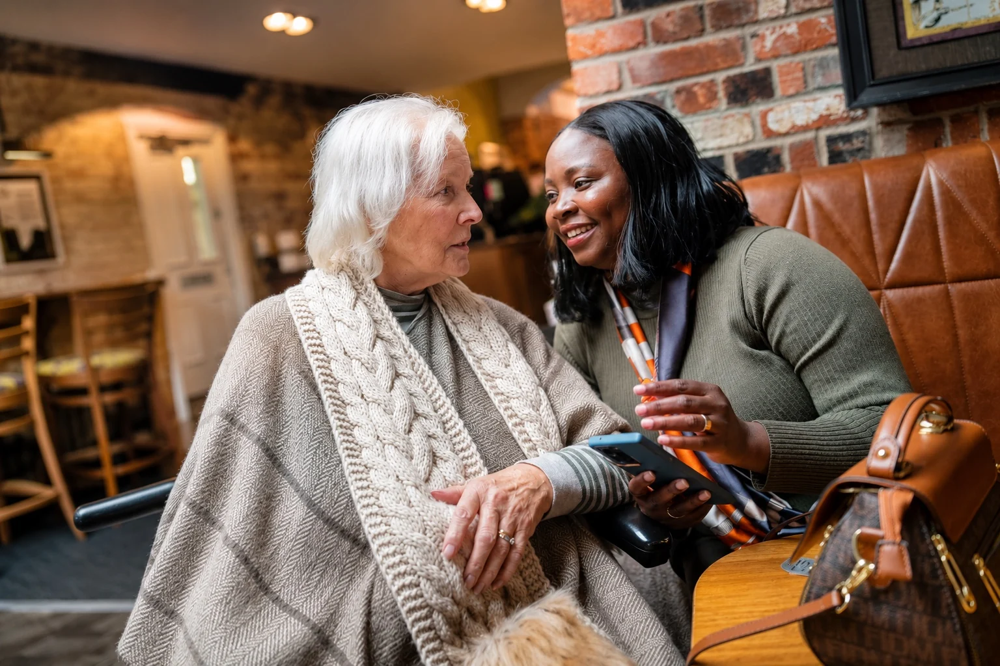

Live in Care
A dedicated carer lives in the person’s home and provides support according to an agreed care plan.
Explore live in careAMK Care Service helps people remain safe, comfortable and respected at home, with support shaped around their routines, choices and dignity.
Speak with our team. We will listen carefully, understand what matters and explain the next steps clearly.

We take time to understand the person, their home, their routines and the support that matters most.
Our aim is simple: to help people remain safe, comfortable and respected in familiar surroundings, while keeping families informed.
From full-time live in care to companionship, personal care and short-term respite, every arrangement begins with the individual.
A dedicated carer lives in the person’s home and provides support according to an agreed care plan.
Explore live in careRespectful help with washing, dressing, grooming, toileting and other personal routines.
Explore personal careConversation, meaningful activity, reassurance and social support at home and in the community.
Explore companionshipCalm, patient and familiar support for people living with dementia or memory loss.
Explore dementia careNight-time reassurance, assistance or monitoring based on the person’s agreed care plan.
Explore overnight careTemporary support that gives family carers time to rest, travel, recover or manage other commitments.
Explore respite careClear processes, responsible recruitment and open communication are built into the way AMK Care Service works.
Care plans reflect needs, routines, preferences, dignity and choice.
Carers are selected through appropriate checks, including Enhanced DBS checks.
Staff receive relevant training and safeguarding concerns are handled seriously.
Enquiries are handled confidentially and families receive clear follow-up.
You will know what happens next at each stage, without pressure or confusing language.
Tell us about the situation, location, care needs and preferred way to be contacted.
We discuss routines, preferences, risks, family expectations and suitable support.
A personalised plan and clear quotation are prepared before support begins.
Care is reviewed and adjustments can be discussed when circumstances change.
Live in care is available throughout England. Home care is currently offered in selected local areas and continues to expand.
Clear information about arranging care at home.
A carer lives in the person’s home and provides support according to an agreed care plan, while helping them remain in familiar surroundings.
Costs depend on the type and level of support required. A personalised quotation is provided after a free assessment.
This depends on the person’s needs, location, assessment and suitable carer availability. Contact the team to discuss current availability.
AMK Care Service uses Enhanced DBS checks as part of its safer recruitment approach.
It may be suitable for couples who wish to remain together at home, subject to an assessment of both people’s needs.
Yes. A suitable private bedroom and reasonable access to bathroom and kitchen facilities are required.
Yes. Care should be reviewed and adjustments can be discussed when needs, routines or circumstances change.
Complete the consultation form, call, email or contact AMK Care Service through WhatsApp. The team will explain the next step.
Talk with our team about suitable care, availability and the next steps.
Request a Free ConsultationKind, reliable and compassionate carers can apply through our online application page.
Apply to Join AMK CareWe are here to listen, guide you and help you understand suitable support.
Tell us briefly about the situation. We will help you understand the options and the next step.